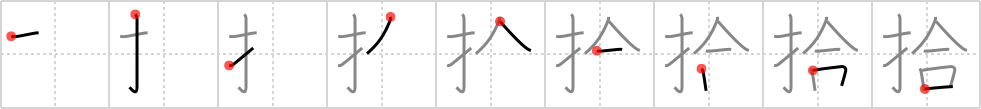

拾
← →
pick up

Reading:
On-Yomi: シュウ、ジュウ — Kun-Yomi: ひろ.う
Heisig story:
Fingers . . . fit together. Compare frame 698.
Koohii stories:
1) [johnzep] 28-4-2007(397): I tried to PICK UP the bowling ball…but my FINGERS didn't FIT in the holes.
2) [elhnad] 2-2-2008(94): Try PICKING UP a girl by trying to FIT your FINGER in you know what… let me know how that works.
3) [Zarxrax] 22-4-2008(54): When you are trying to pick up a girl, don't get too excited and start fingering her before you have a meeting of the mouths.
4) [Francois] 13-4-2008(33): If it can FIT in your HAND, you can PICK IT UP.
5) [cerulean] 30-9-2008(17): To Pick Up something, your FINGERS must FIT around the object. — This is a basic rule for all primates.